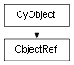

class cymel.core.cyobjects.objectref.ObjectRef¶

- class cymel.core.cyobjects.objectref.ObjectRef(src)¶
Bases:
CyObjectA weak reference wrapper that allows you to re-obtain the reference to
CyObjecteven if it is lost.Since this itself is also
CyObject, it can behave like the original as long as it is supported by the base without obtaining a reference.Methods:
Return internal data.
newObject(data)Create an instance with internal data.
node()Get a node.
object()Gets the object if the weak reference is not broken.
refclass()Get the class of the wrapped object.
refdata()Get the internal data of the wrapped object.
weakref()Get a weak reference.
Attributes:
Method Details:
- internalData()¶
Return internal data.
Override to extend internal data in a derived class. In that case, also override the
newObjectclass method to support extension.The internal data is assumed to be a black box, and the extended data must also include the base data.
- classmethod newObject(data)¶
Create an instance with internal data.
Internal data is assumed to be a black box, and even when overriding this method, the base method must be called to complete the process.
If you want to extend internal data, also override
internalData.- Parameters:
cls (
type) – Class of instance to generate.data – Internal data to be set in the instance.
- Return type:
指定クラス
- refclass()¶
Get the class of the wrapped object.
- refdata()¶
Get the internal data of the wrapped object.
- weakref()¶
Get a weak reference.
- Return type: